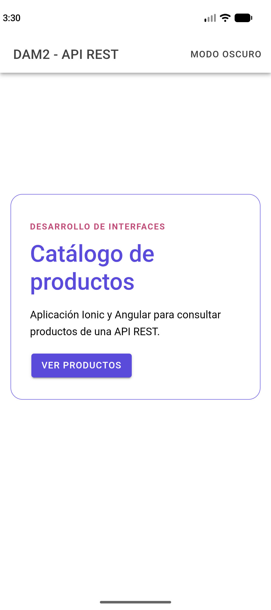
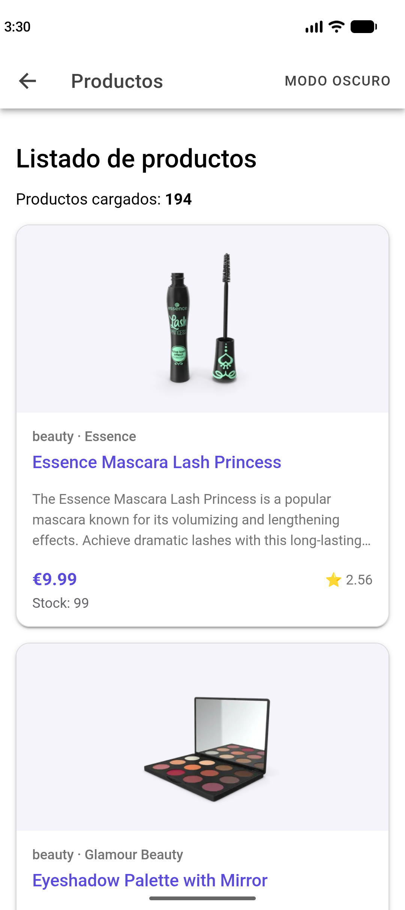
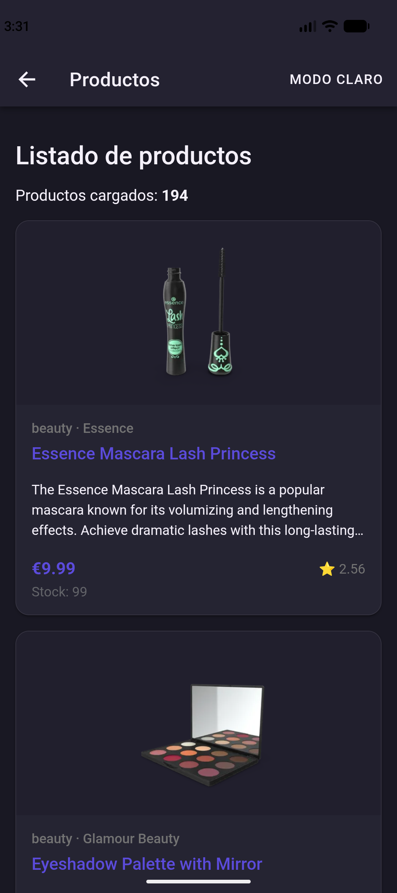
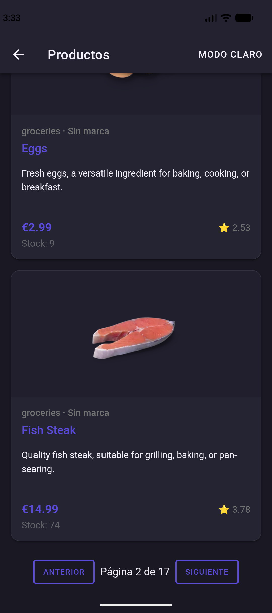

DAM2 · DESARROLLO DE INTERFACES
Aplicación de catálogo con Ionic, Angular y DummyJSON.
Alumno/a: [Escribe tu nombre]
Fecha: 06/10/2026
Incluye: navegación, catálogo paginado, tarjetas, modo oscuro, resolución de problemas y build Android.
IMPLEMENTACIÓN
La aplicación se estructura con AppModule. El módulo
configura Ionic, el router y las peticiones HTTP, y declara las páginas
Inicio y Productos. No se utiliza app.config.ts.
El modelo se encuentra en src/app/models/product.model.ts;
ya tiene el nombre solicitado. El servicio consume
https://dummyjson.com/products. La vista Productos presenta
12 tarjetas por página y utiliza los parámetros limit y
skip para consultar las páginas siguientes.
1. Ionic no reconocía el outlet y la app raíz.
Ionic 9 publica su módulo para NgModule en
@ionic/angular/lazy. Se importó allí
IonicModule y se registró con
IonicModule.forRoot() en AppModule.
2. Prueba Angular incompatible con el cambio de arquitectura.
Las páginas del proyecto se marcaron standalone: false y se
declararon en AppModule. La página de ejemplo antigua que
sigue siendo standalone se importa en la prueba, no se declara.
3. Gradle no encontraba el Android SDK.
Se configuraron ANDROID_HOME y
ANDROID_SDK_ROOT con la carpeta local del SDK.
4. La compilación Android usaba Java 17.
Capacitor requiere Java 21 para compilar el proyecto nativo; se instaló
JDK 21 y se apuntó JAVA_HOME a esa instalación.
ANGULAR
Productos almacena resultados, total, carga, error y página actual en
signals. El template los lee mediante llamadas, por ejemplo
products(); cuando llega la respuesta HTTP, el componente
cambia el valor con products.set(response.products).
Leer el signal en el template registra la dependencia con Angular y
provoca la actualización de la vista cuando cambia. Por eso al adoptar
signals se modifica la expresión del template de
products a products(). No se necesita llamar
manualmente a detectChanges().
Un component es una pieza de interfaz reutilizable. Una page también es un component Angular, pero representa una pantalla completa asociada a una ruta. Inicio y Productos son páginas; una tarjeta reutilizable del catálogo podría extraerse como componente.
http://localhost:8200.Rama de trabajo: desarrollo
Repositorio GitHub: github.com/jorgeberenguer2023-ops/Ionic-con-Angular/tree/desarrollo
Despliegue Vercel: Pendiente de publicar desde main.
Flujo previsto: revisar en desarrollo, integrar después
en main y publicar en Vercel desde main.
La rama desarrollo ya está publicada en GitHub. Vercel queda pendiente de la revisión y posterior integración en main.
EVIDENCIA · PIXEL 9

EVIDENCIA · PIXEL 9

EVIDENCIA · PIXEL 9

EVIDENCIA · PIXEL 9
